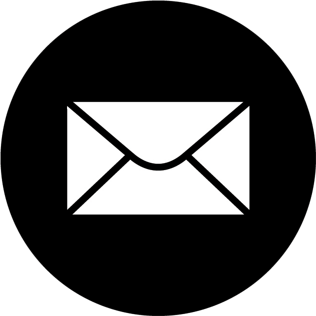

After the pandemic, many students felt isolated and lonely even as they returned to campus. They had missed their first chance to establish friendships while in the dorms; others had missed their last year with their friends; for all students, the lack of in-person classes made it hard to connect with peers in the same major and career paths. For our Art 575 class (User Experience and User Interface for Graphic Design), our team decided to research this problem further and create an app solution to address it at our University of Wisconsin-Madison campus.
To begin, we created a Google Forms questionnaire with questions such as "How easy / difficult do you find making new connections with other students in your classes?" and "How does having a friend in class impact your academic performance and mental health?" Over 20 student responses helped inform our data-backed approach to our app features and design; the primary results are depicted above.
After our user research, we identified the three most common user types: those motivated by a desire to improve academic performance, those who wanted to increase their social connections on campus, and those who wanted to expand their professional network. The user persona depicted above is for a socially motivated user and exemplifies the common characteristics identified in our interviews and surveys. This step informed how we added or removed features from our app, as well as how we formulated the overall design and interface.
To capture our user's potential goals and motivations for using our app, we created 3 user journey maps for each user type (socially, academically, or professionally motivated). The map above depicts how a socially motivated user may want to use our app, and how different features could aid her at each step. This is important to ensure that each of the features we add serves a specific purpose and accomplishes the goals of our users.
After finishing with the research and target audience segmentation part of our development process, we moved on to designing our app features, flows, and interactions. We utilized Miro to create a fluid flow chart to capture every potential interaction; the image above depicts the process of creating a profile. This process aided in visualizing our final app and the steps users would go through to accomplish their goals.
Next, we created low-fidelity wireframes to portray our user flows in app form. We did not focus on the overall design or aesthetic of the app at this point; instead, we worked on finalizing the form, actions needed to accomplish different tasks, and the layout of information. This step was crucial for turning our idea into a visible product.
We translated our low-fidelity wireframes into Figma to create a fully functioning app prototype. Our first iteration underwent extensive user testing with real users to identify confusing design elements, unclear directions, and missing/poorly executed flows. We met with users in person and provided textual instructions, such as "create an account," "use the live location feature to find nearby friends," or "send a message in the group chat." We provided minimal guidance to see if users could accomplish each potential usage scenarios on their own. We observed the time it took them to complete each task, how many steps/clicks they had to use, and how many times they had to go back to find what they were looking for. After, we debriefed each user and asked them more in-depth, qualitative questions, such as what they thought of the overall design, if they wanted more or fewer instructions, and so on. Then, we compiled data across users to identify the most common issues, and then corrected them in our next version of the app. We underwent another series of testing after this and were pleased with the level of efficiency, effectiveness, and accessibility.
Based on our usability testing and interviews, we finalized our Figma prototype by making it more user-friendly, intuitive, and visually engaging. We removed the text input boxes and replaced them with clickable tags to simplify and expedite the account creation process. We added grey backgrounds to separate information and create a more understandable hierarchy, especially on text-heavy pages like the events tab. Overall, this project taught me the importance of human-centered design and an iterative design process. It also reaffirmed my appreciation for the research process, because without it, there is no guarantee that you are reaching the proper target audience and meeting all of their needs.
Thank you so much for looking at my UX/UI design process! Please reach out if you want to see more of this project or have any questions.
